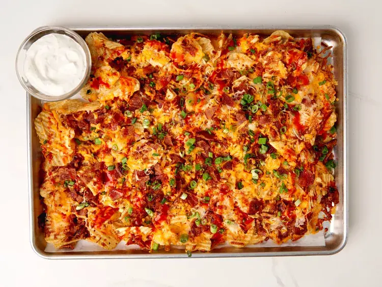

Potato Chip Nachos

Description
These loaded potato chip nachos are like a loaded potato skin meets a nacho. The chips get extra crispy, and the cheese holds everything together. The warm, savory flavor from ranch seasoning and bacon contrasts nicely with the cool, tangy sour cream dip.
Ingredients
- 1 (1 ounce) packet ranch seasoning, divided
- 1 cup sour cream
- 10 slices bacon
- 12 ounces wavy, kettle-cooked potato chips (such as Cape Cod Waves®), about 1 1/2 bags
- 2 cups shredded Cheddar cheese
- 2 cups shredded Monterey Jack cheese
- 3 green onions, thinly sliced
- 1 teaspoon hot sauce, or to taste (optional)
Steps
- Preheat the oven to 425 degrees F (220 degrees C). Line a large rimmed baking sheet with parchment and spread chips out in an even layer.
- Add 1 tablespoon ranch seasoning to sour cream and stir well to combine; set aside.
- Place bacon in a large skillet and cook over medium-high heat, turning occasionally, until evenly browned, about 10 minutes. Drain bacon slices on paper towels; crumble when cool enough to handle.
- Toss remaining ranch seasoning with shredded cheeses and sprinkle cheese mixture evenly over all the chips. Top evenly with bacon.
- Bake in the preheated oven until cheese is melted and chips are beginning to brown and crisp around the edges, 10 to 12 minutes. Top with green onions and hot sauce. Serve with reserved sour cream dipping sauce.